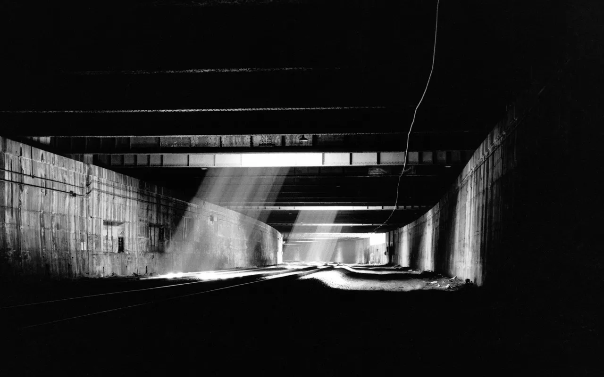

The Tunnel
Yale University Press, 1995.
The subjects of The Tunnel are individuals who have built homes in an Amtrak tunnel under the West Side Highway, popularly referred to as the "Freedom Tunnel". Consisting of photographs and oral histories Morton collected between 1991 and 1995, the book depicts a variety of improvised accommodations, some in old railway cinder-block structures, others in recesses in the tunnel walls accessed by tall ladders. Tunnel residents each speak to their personal circumstances, while emphasizing the Tunnel’s affordances: privacy and a modicum of dignity, especially in comparison to the inadequate conditions of city shelters. When Amtrak announced its intention to evict these residents in 1994, Morton and filmmaker Marc Singer worked with Coalition for the Homeless to move tunnel residents into permanent housing.
